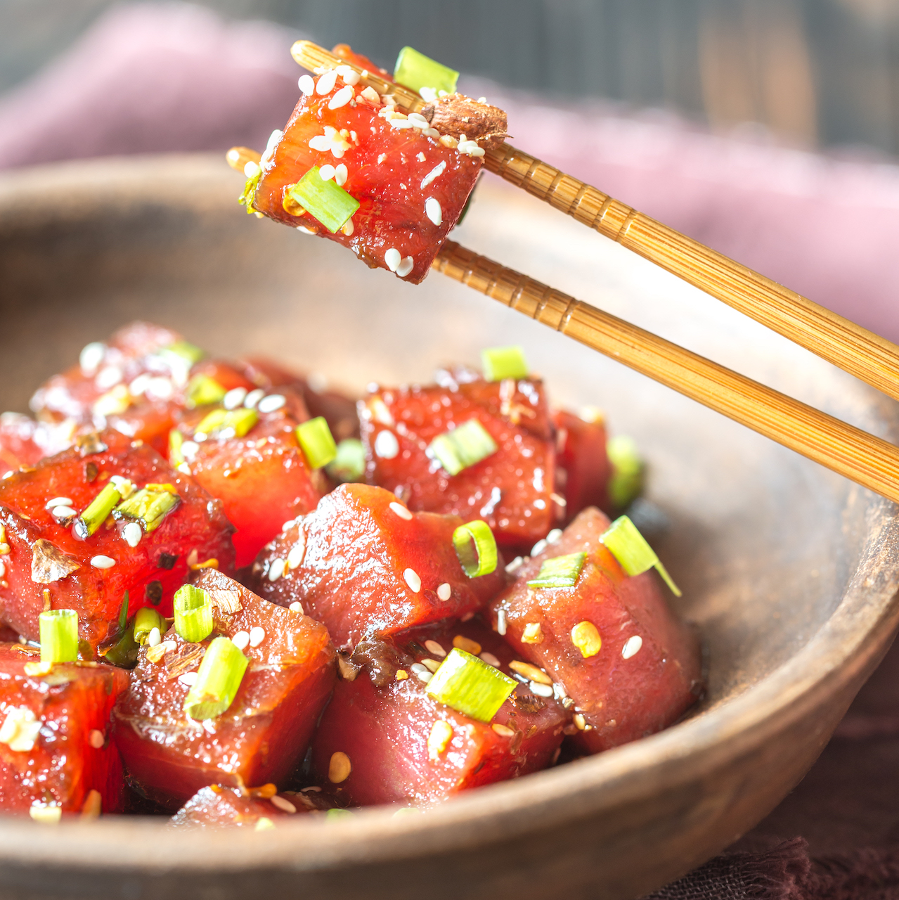

Tuna Poke

DESCRIPTION
This easy poke recipe is a refreshing Hawaiian salad of fresh ahi tuna steak cubes tossed with soy sauce, sesame oil, and green onions for a dish full of umami flavor. I like to add chopped macadamia nuts even though they are not authentic — they add a delicious crunch! This makes 4 main course servings or 8 appetizer servings.
INGREDIENTS
- 2 pounds fresh tuna steaks, cubed
- 1 cup soy sauce
- 3/4 cup chopped green onions
- 2 tablespoons sesame oil
- 2 tablespoons finely chopped macadamia nuts
- 1 tablespoon toasted sesame seeds
- 1 tablespoon crushed red pepper
DIRECTIONS
- Place tuna in a medium non-reactive bowl.
- Add soy sauce, green onions, sesame oil, sesame seeds, macadamia nuts, and red pepper flakes; mix well.
- Cover and refrigerate at least 2 hours before serving.